| 日付 | 2009年5月16日（土） |
|---|---|
| 山域 | 房総 |
| メンバー | 単独 |
| 山行形態 | 日帰り |
| アクセス | 電車、船、バス |
| ルート (Map) | 関豊駅→高宕山→石射太郎→マザー牧場 |
山登りを始めて1年に1回は千葉県の山に登っているが、
今年はまだ訪れていない。
今週の天気は下り坂だが、低い山に登れば少しは展望もあるだろうと思い
久々に房総半島に向かうことにする。
8:38 関豊駅バス停到着。標高60m。
今回は船を使わず電車を使って房総入りする。
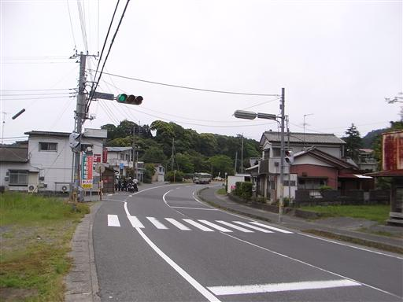
橋の下には汚い川が見える。
傾斜があまりない地形なので、川の流れもほとんど無いのだろう。
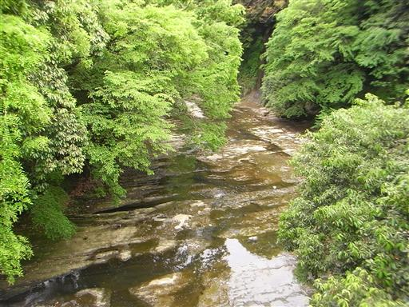
道端にアカツメクサが咲いている。シロツメクサと同種だ。
花のすぐ下に葉がつく。

しばらくはのどかな集落の中を歩いていく。
所々に高宕山を示す道標があるので安心だ。
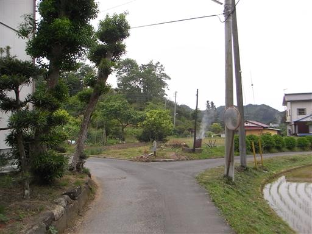
道端に咲いているのはマーガレットだろうか？
野生ではなく植生のものだろう。
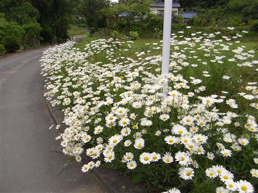
田んぼの畦道を通って登山道に入っていく。
標識が無ければ絶対に分からないところだ。
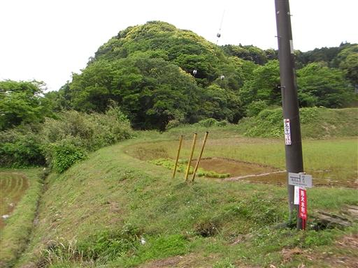
池畔にアヤメが咲いている。
夏になるとこの池は蚊の生産地になりそうだ。
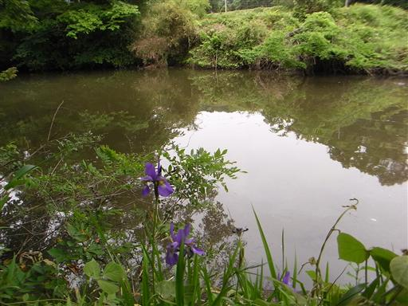
登山道に入っていく。全体的に藪っぽく先行きが不安だ。
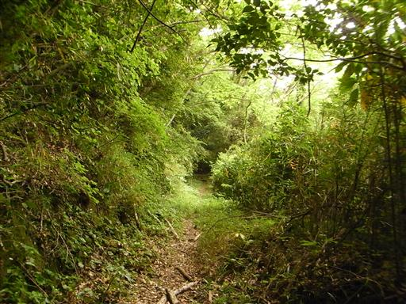
地面は湿っている。房総半島はヤマビルが多いらしいので、足元に気をつけながら歩く。
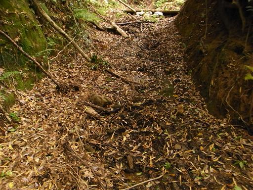
木にリスを発見。低い丘陵地帯が続くが、動植物はなかなか豊富だ。
この辺りは野生の猿の生息地としても有名らしい。
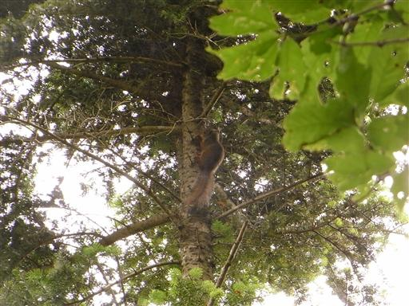
少し視界が開ける。左から2番目のピークがおそらくめざす高宕山だ。
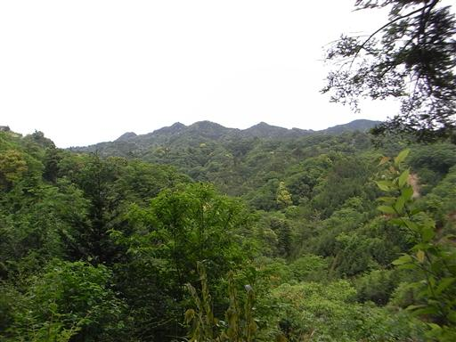
ウツギがあちこちで白い花を咲かせている。
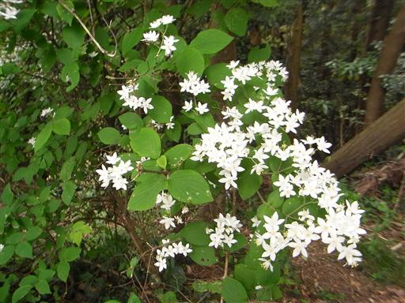
コゴメウツギの花も見られる。ウツギとは全く別の科の植物だ。
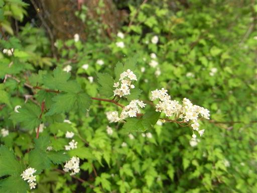
藪っぽく平凡な登山道から突然白い岩が表れる。
ここは白い壁のテラスと呼ばれている。

展望が開けるが、特徴の無い丘陵地帯がただただ広がるのみだ。
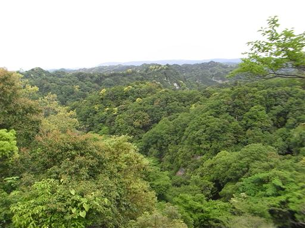
高宕山から伸びる稜線に近づくと、登山道は沢沿いに下りて行く。
お茶立場と書かれたやかんがぶら下がっている。
沢に水はなく虫が飛び交う陰気な場所で、茶を飲む気にはならない。
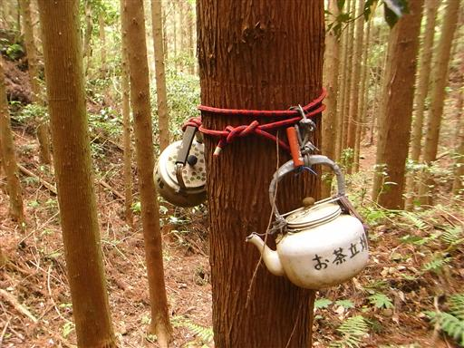
稜線に達すると右方から道が合流し、少し道が広くなる。
なだらかだった登山道に、突然急斜面が現れる。
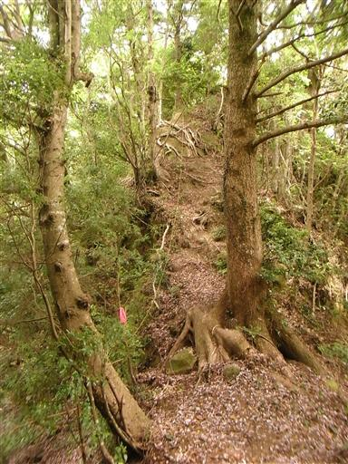
しばらく尾根道を進むと、再び右から登山道が合流する。
道標には房州最奥と書かれている。
この辺りは極めて地形が複雑で、作業道も非常に多い。
あまり迷いたくは無いところだ。
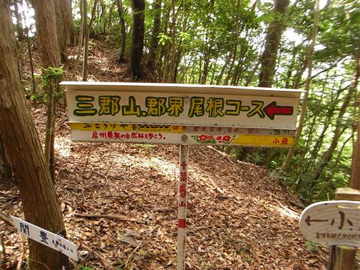
ここからは道がきれいに整備されていて、気持ちよく歩ける。所々ですれ違う人も現れる。
今まで歩いてきたルートは高宕山への一般ルートではないようだ。
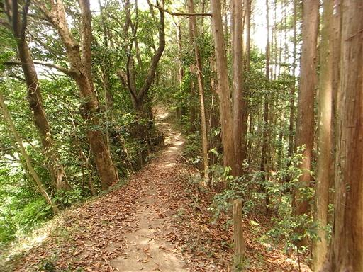
岩壁の基部を通過する。岩が上から覆い被さっているが、
どうやってこんな地形ができたのだろうか？
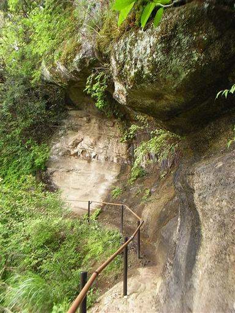
辺り一面、足元から頭上まで緑一色だ。
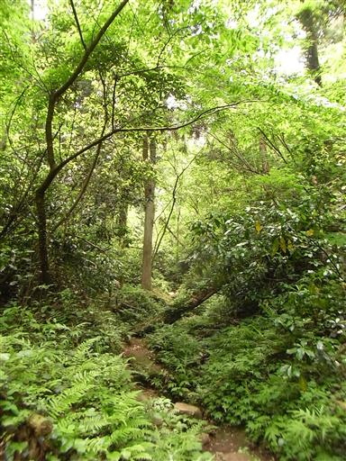
高宕山への最後の登りは急斜面が続く。
梯子に鎖の組み合わせは初めてみたが、かえって危険な気が…
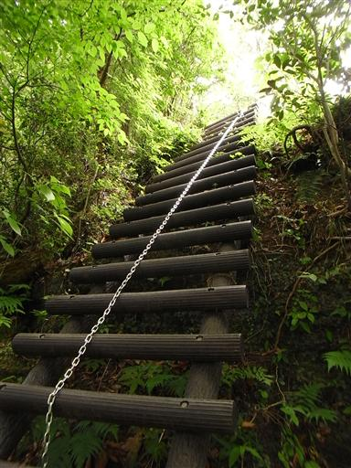
露岩の上を登っていく。階段状に整備されているので危険は全くない。
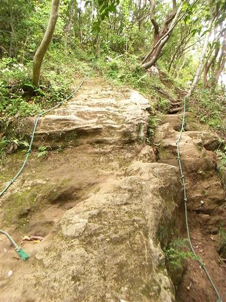
11:41 高宕山山頂到着。標高330m。
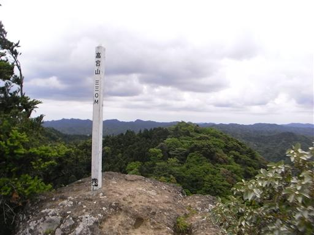
遮るものの少ない山頂からは大展望が広がる。
目の前には延々と丘陵地帯が広がり、山らしい山は全くない。
こんな景色は他の山域では見られない。まさに緑の海だ。
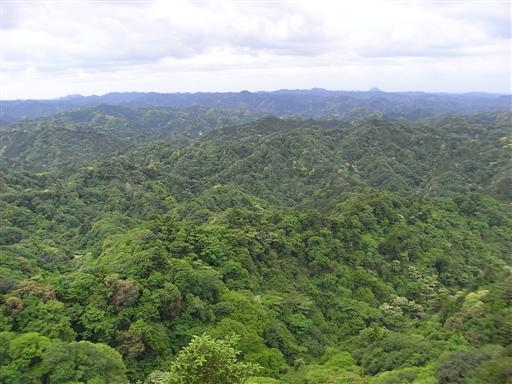
どこを見渡してもほとんど同じ景色だが、北方には少し高い盛り上がりが見える。
おそらく鹿野山だろう。
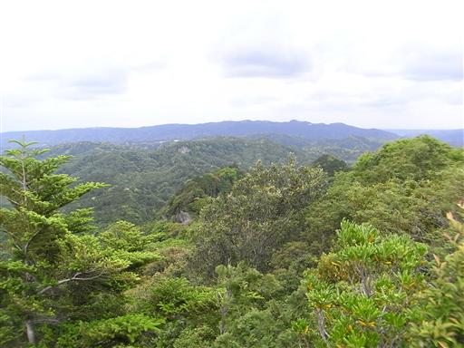
山頂には小さなが石祠がある。
30分ほど展望を楽しんだ後、山頂を辞す。
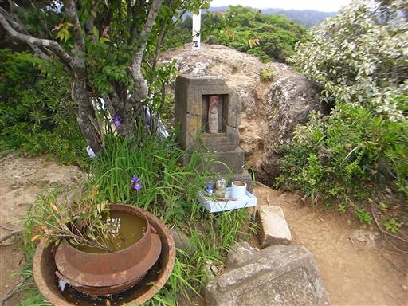
山頂からしばらく歩くと、岩にぽっかりと穴が空いている場所に出てくる。
登山道はその中を通過している。
どうやら自然に空いた穴ではなさそうだ。

その先に大きな社が現れる。高宕観音堂だ。
建物が半分岩に埋まっている。
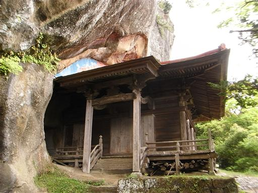
内部には少々不気味な面が飾られている。
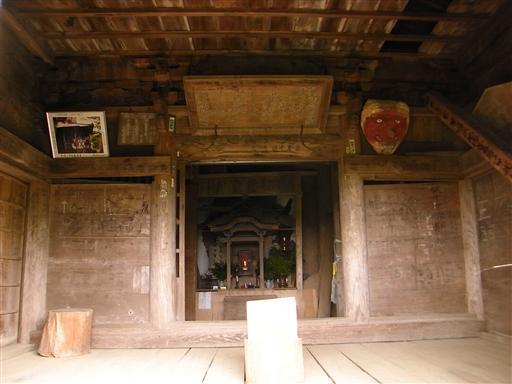
覆い被さるような巨岩の下に石造の三重塔が建てられている。
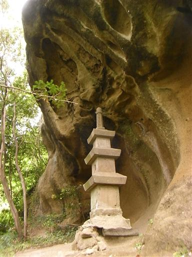
高宕観音から参道を下ると、狛犬と仁王像が現れる。
山岳信仰の山としての雰囲気が良く残っている。
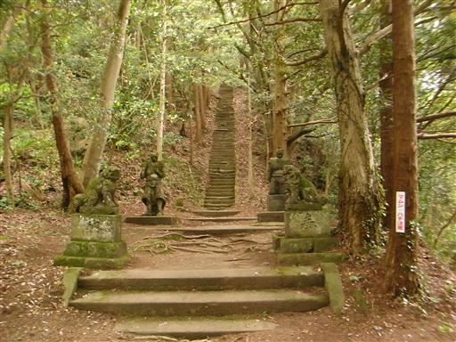
仁王像は相当に古そうだ。いつの時代に造られたものだろう？
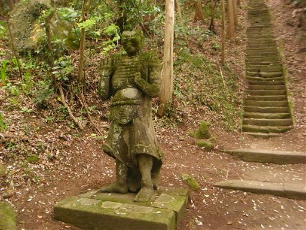
形も少し変わっている。
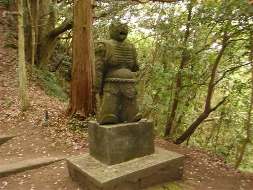
高宕観音から先は再び緑に覆われた登山道になる。
ところどころで展望が広がるが、高宕山ほどの展望は得られない。
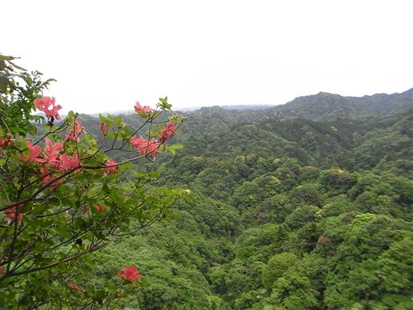
ニガナの花が咲いている。
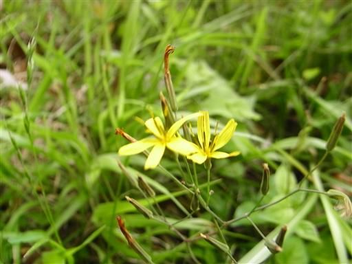
石射太郎に到着。山というほどのものではないが目立つ岩壁がある。
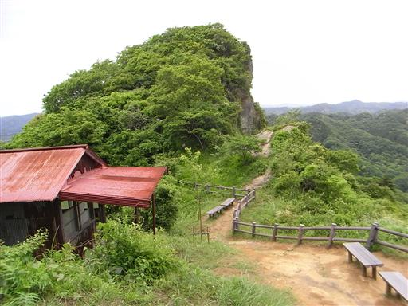
付近にはニワゼキショウの花が群生している。少々不気味な花だ。
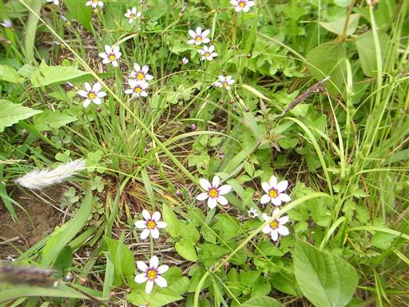
打ち捨てられた民家。この民家も相当に古そうだ。
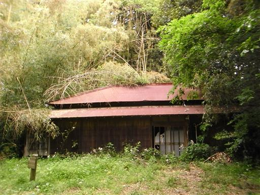
鉄製の扉が現れる。
右の解説板には「天然記念物（高宕山のサル）のための電気柵です。」と書かれている。
なぜ電気柵がサルのためになるのだろう？
いずれにせよ柵は破れてもう役目を果たしていない。
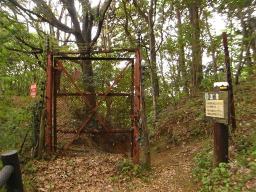
高宕山を下山する。ここものどかな山間の集落だ。
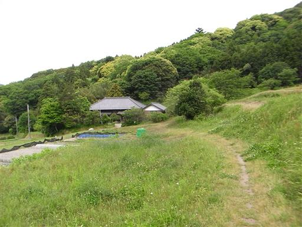
ここからガイドブックに載っている道を通って、
鹿野山の一角にあるマザー牧場に向かう。
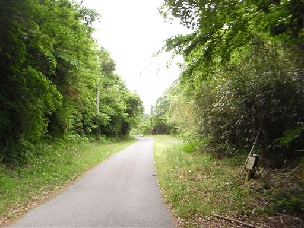
マザー牧場へ続く道は関東ふれあいの道に指定されている。
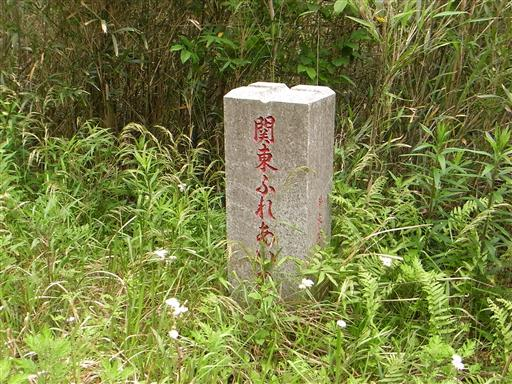
道は遊歩道ではなくどこまでも車道が続いている。
ハイキングコースとして指定するのはどうかと思うが、仕方が無いので歩いていく。
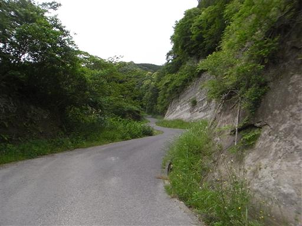
ニシキウツギが白と紅の花を付けている。
観賞用に庭に植えたくなるくらいきれいな花だ。
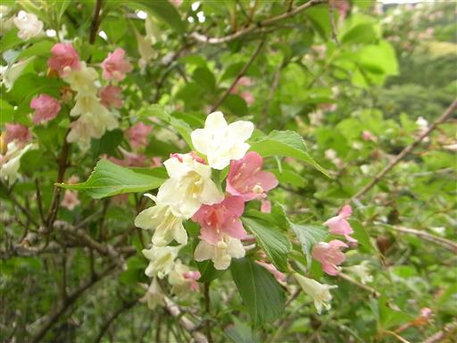
車道からは山麓の集落が望める。
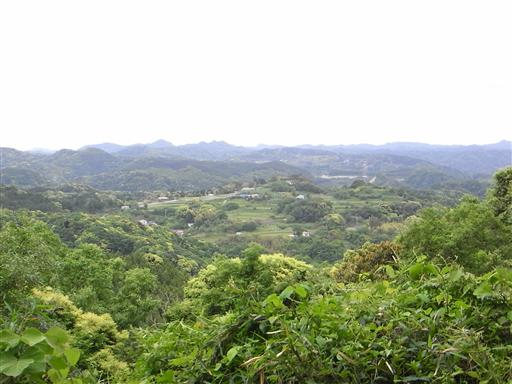
道は途中で通行止めになる。歩行者にも迂回を勧める案内板があったが、
ここですれ違った男性がまっすぐ行っても大丈夫というので、そのまま直進する。
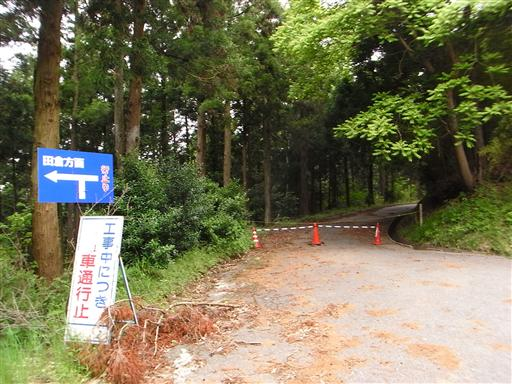
通行止めはここの工事が原因のようだ。歩いて通過するには何の支障もない。
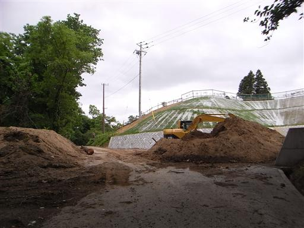
そのまま車道を直進するとマザー牧場の敷地内に出てしまった。
観光客がいて、そこそこ賑わっている。
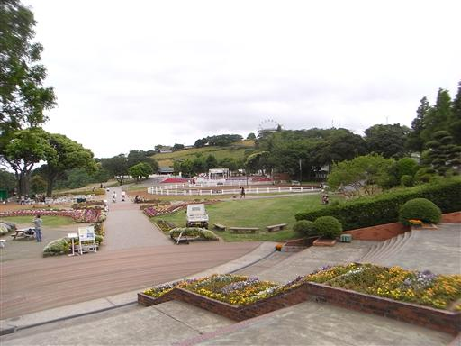
マザー牧場入口ゲートから退出する。
この施設は1500円という安からぬ入場料が必要だ。
期せずしてマザー牧場へタダで入る方法を知ってしまった。
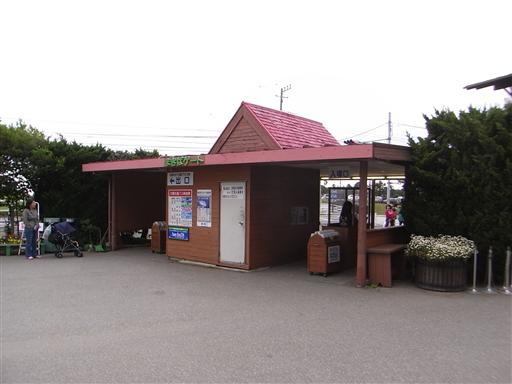
15:20 マザー牧場バス停到着。標高270m。
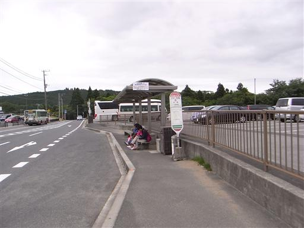